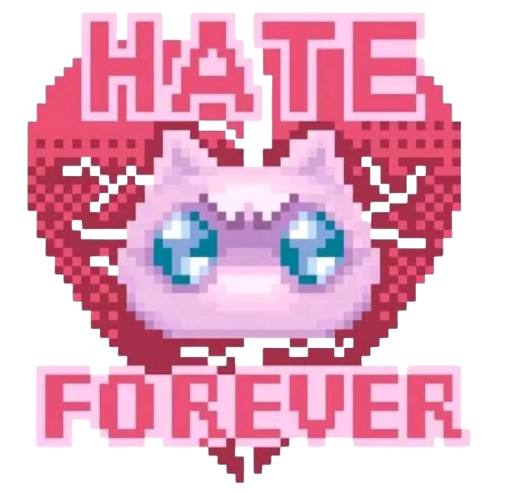
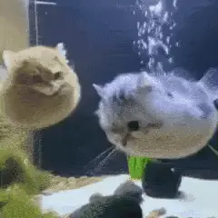
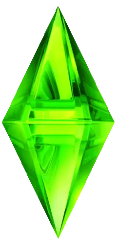
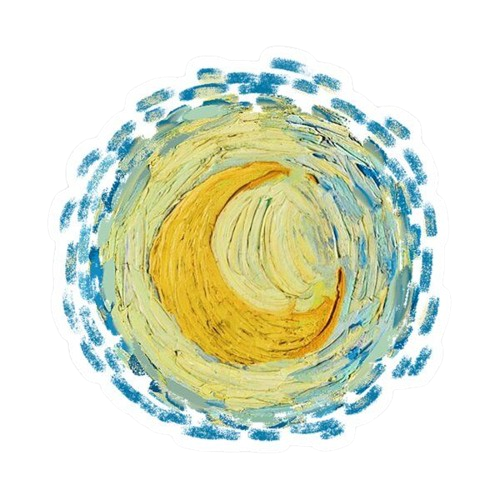
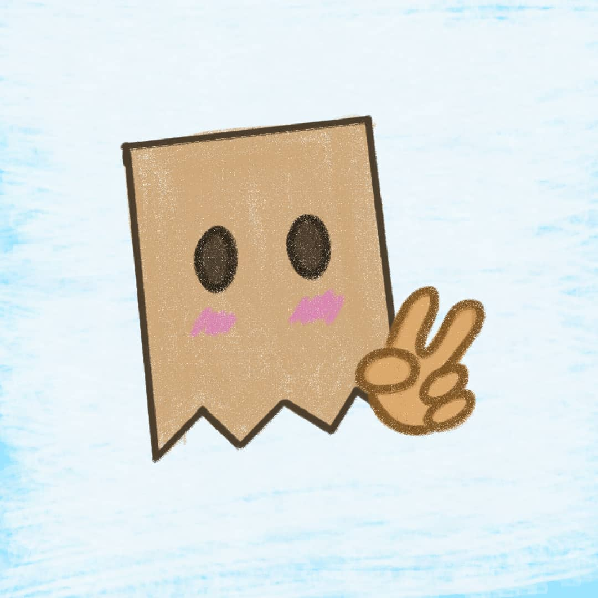

silly ( ˶°ㅁ°) !!
aquí guardo las paginas que hago para practicar. son mías asi que espero que te gusten :)
(´｡• ᵕ •｡`)
aquí guardo las paginas que hago para practicar. son mías asi que espero que te gusten :)
(´｡• ᵕ •｡`)

Una wiki sencilla sobre el mejor juego que pudo crear el humano

Un museo estrellado de un hombre que se cortó una oreja

programador — eylibhice esta pagina para tener un lugar guardar los proyectos que voy realizando mientras aprendo código. todo está hecho con mucho cariño y gatos tonotos jejej